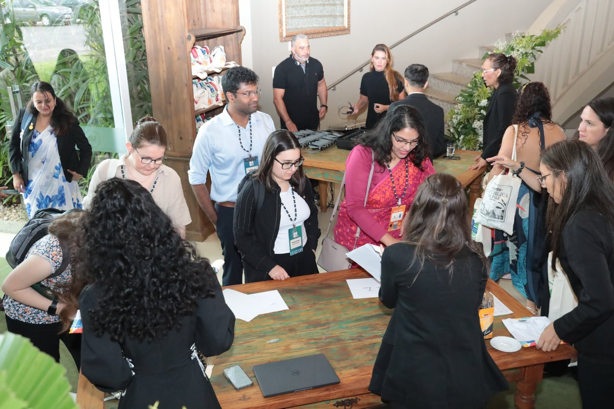
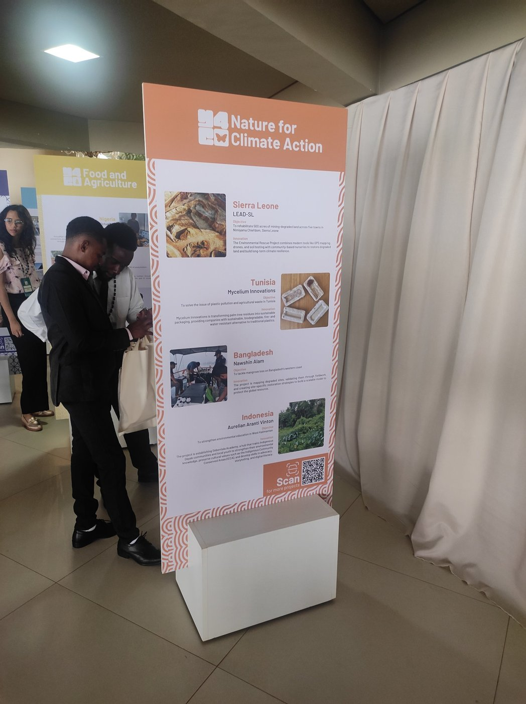
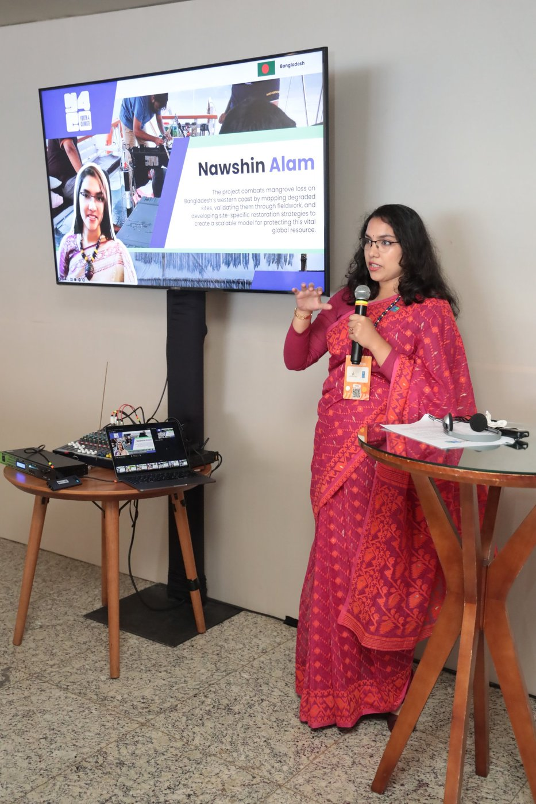
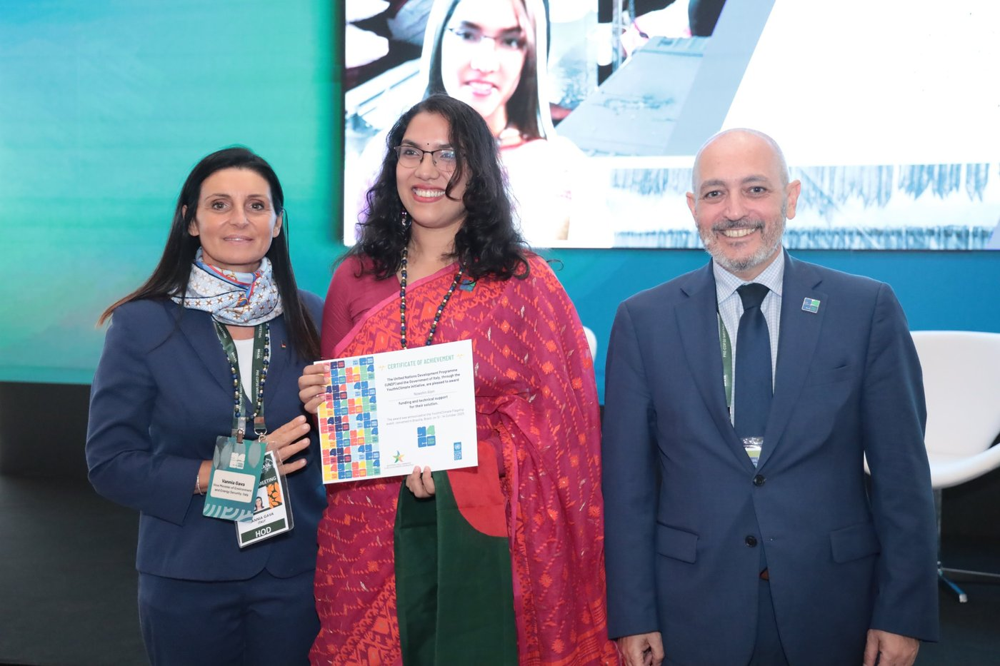
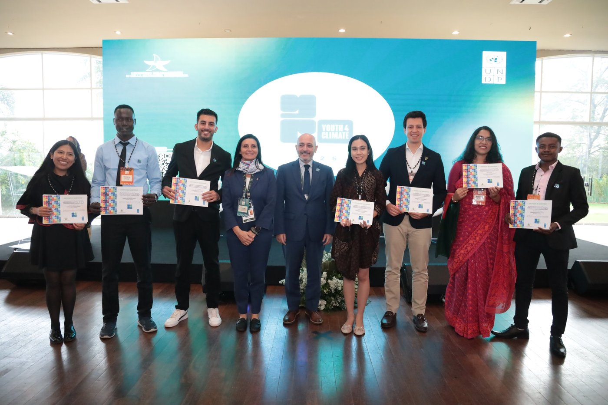
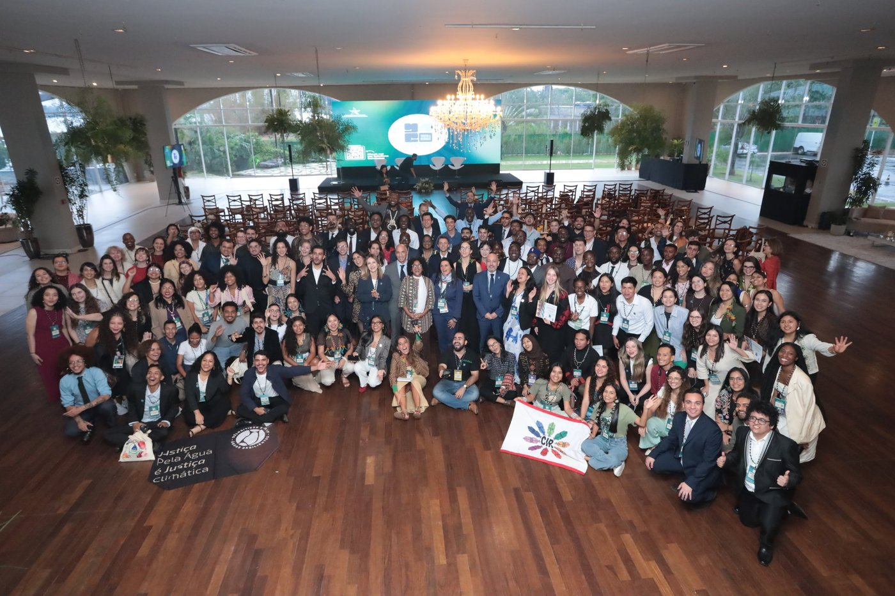

A few months ago, "Integrated Approach for Strategic Mangrove Restoration" was a project plan — a pipeline sketched out between satellite data and field notebooks, built to answer a very specific, very local problem on Bangladesh's coast. In October 2025, it became something else too: one of 50 youth-led climate solutions from 34 countries, standing on a stage in Brasília, Brazil, at the Youth4Climate Flagship Event.

Getting there
The trip itself was a reminder of how far this project had travelled, literally. The route to Brasília included a long transit through Doha before the final leg across the Atlantic — plenty of time to rehearse, in my head, exactly how to explain a GIS suitability model to people who had never heard of a mangrove, and exactly how to explain mangrove ecology to people who had never used GIS.
A room full of 34 countries
Nothing quite prepares you for walking into a hall with fifty other youth-led projects from across the world, each one tackling a different piece of the climate crisis — from clean energy to water justice to, in our case, coastal restoration. Our project sat within the "Nature for Climate Action" track, alongside youth-led initiatives from Sierra Leone, Tunisia, and Indonesia, among others, each one presented on a shared exhibition board that made the scale of the whole cohort impossible to miss.

Presenting the project on stage — explaining why site selection matters before a single seedling goes into the ground — to an audience that size was, honestly, nerve-wracking. But it was also the first time I saw how clearly the idea translated outside its own context: ground-truthing satellite data, listening to the community that lives with the consequences, designing restoration around evidence rather than convenience — these aren't ideas unique to Bangladesh's coastline. They travel.

The ceremony
The moment that still doesn't quite feel real: receiving the project's Certificate of Achievement from Vannia Gava, Italy's Deputy Minister for the Environment and Energy Security, in front of the full cohort. It wasn't an individual award — it belonged to every member of the team back in Bangladesh who had spent long days processing satellite imagery, wading through field sites, and sitting with communities who trusted us with their knowledge of their own coastline.


What I brought home
Beyond the certificate — which now has its own place on our Events page — what I actually carried back from Brasília was a sharper sense of what this project is for. It's easy, deep in remote-sensing rasters and suitability scores, to lose sight of the fact that the whole point is a coastline where people and mangroves can both keep living well. Brasília put that back in focus, surrounded by fifty other reminders of the same thing, in fifty different languages and landscapes.

We're back to work now — field validation trips, community consultations, the unglamorous middle part of any restoration project. But it's work that now carries a clear reminder: this is part of something much larger than one coastline, and the Youth4Climate network is one more set of people rooting for it to succeed.
Comments
This site is hosted as a static GitHub Pages site, so there's no live comment box built in yet. We'd still love to hear your thoughts — send us feedback and we'll respond, or follow this project's repository on GitHub to discuss via Issues/Discussions.